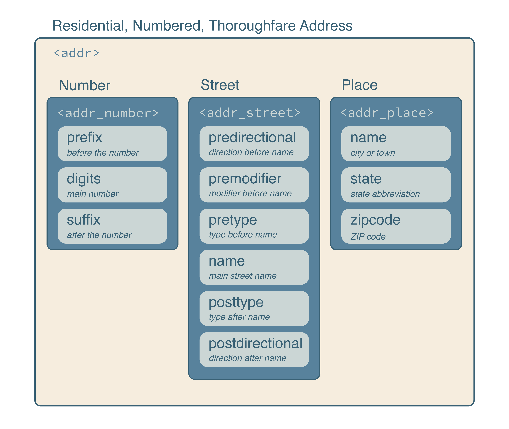
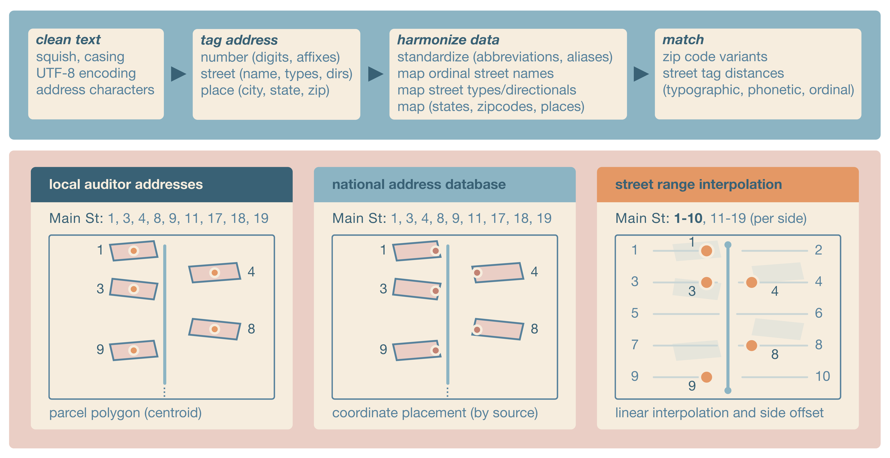

About
Addresses not validated at collection are often inconsistently formatted and standardized, making them difficult to compare or link to other address data. The goal of addr is to clean, parse, standardize, match, and geocode real-world, noisy US addresses in R.
addr can parse address components from strings and build vctrs-based address vectors, including addr() vectors and the addr_number(), addr_street(), and addr_place() component vectors. Each are structured to reuse the United States Thoroughfare, Landmark, and Postal Address Data Standard from the US Federal Geographic Data Committee.

The standard also facilitates efficient operations with the Department of Transportation’s National Address Database for address matching and with the Census TIGER/Line Shapefiles for street-range geocoding. Address vectors can be standardized, matched, joined, and used as data-frame columns, allowing standard R tools to work with nested address structures.
Installation
Install the latest stable release of addr from R-universe with:
install.packages("addr", repos = c("https://geomarker-io.r-universe.dev", "https://cloud.r-project.org"))Or, install the development version of addr from GitHub with:
# install.packages("pak")
pak::pak("geomarker-io/addr")Installing addr from GitHub requires a working Rust toolchain; install one using rustup.
Getting started
addr vectors
addr vectors behave like standard R vectors: they recycle, subset, and combine with vctrs tooling. You can parse text into an addr vector with as_addr() or build one from component vectors with addr().
as_addr(c("3333 Burnet Ave Cincinnati OH 45229",
"5130 Rapid Run Rd Cincinnati OH 45238"))
#> <addr>
#> @ number: <addr_number> function ()
#> .. @ prefix: chr [1:2] "" ""
#> .. @ digits: chr [1:2] "3333" "5130"
#> .. @ suffix: chr [1:2] "" ""
#> @ street: <addr_street> function ()
#> .. @ predirectional : chr [1:2] "" ""
#> .. @ premodifier : chr [1:2] "" ""
#> .. @ pretype : chr [1:2] "" ""
#> .. @ name : chr [1:2] "Burnet" "Rapid Run"
#> .. @ posttype : chr [1:2] "Ave" "Rd"
#> .. @ postdirectional: chr [1:2] "" ""
#> @ place : <addr_place> function ()
#> .. @ name : chr [1:2] "Cincinnati" "Cincinnati"
#> .. @ state : chr [1:2] "OH" "OH"
#> .. @ zipcode: chr [1:2] "45229" "45238"Address Matching
addr_match() compares one addr vector to another and returns one selected reference address for each input address. Matching is staged: ZIP codes are matched first, then streets are matched within each matched ZIP code, then address numbers are matched within each matched ZIP/street group. This keeps matching fast while still allowing common street-name, phonetic, ZIP-code, and address-number variation.
Use addr_left_join() when the goal is to join data frames with addr columns. It uses the same staged matching as addr_match() and then expands exact duplicate reference rows when more than one row in y has the selected address. Use addr_fuzzy_left_join() when you need all fuzzy candidate matches rather than one selected match.
For repeated matching against the same reference addresses, prepare the reference once with addr_match_prepare() and reuse the returned index in later addr_match() or addr_left_join() calls.
National Address Database
nad() reads county-level address points from the U.S. Department of Transportation National Address Database. Counties can be requested by county name plus state, such as "Hamilton", "OH", or by 5-digit county FIPS code, such as "39061".
The nationwide NAD geodatabase is large and county-based extracts are computationally expensive, so addr caches derived county data in the R user cache directory. The package also includes nad_example_data(), a small baked fixture derived from Hamilton County, Ohio. Use it for examples, tests, and matching workflows that should run without downloading NAD source data first; use nad("Hamilton", "OH") when you need complete Hamilton County data.
Geocoding
Matched NAD coordinates can be used as a geocode, but placement often varies by the contributing organization and state. If linking to parcel geographies, intersection with parcel boundaries or their centroids can be used. Street range geocoding does not use address-level data, but instead interpolates the location with possible street ranges provided by census.gov.
In any case, geocoding includes (1) cleaning address text, (2) tagging the address, (3) harmonizing the address tags, (4) matching the ZIP code and street combinations. Any differences between the methods arise when placing a coordinate after matching the ZIP code and street

geocode() converts addr() vectors to point locations using Census TIGER address ranges. It matches the input street to installed TIGER address features, chooses the best address range and street side from the address number, interpolates a point along the range, and offsets that point from the street line. Geocoding returns the input address, matched ZIP code, matched street, point s2 geography, and s2 cell. Inputs with missing or unmatched ZIP codes, streets, or address ranges return missing geographies rather than centroids of larger areas.
TIGER Address Features
TIGER address features are Census street-segment address ranges. addr stores them as a hive-partitioned, multi-file parquet dataset, grouped by ZIP-code partitions and county files, so geocoding can read only the local files needed for the input ZIP codes.
taf_install() installs TIGER address features for one county; however, geocode() installs all county files that may contain the ZIP codes in an input address vector as needed. Read TIGER address features for one or more ZIP codes with taf_zip(). taf_needed_counties() identifies which county files may contain the ZIP codes in an input address vector, including selected ZIP-code variants. taf_ensure() installs any missing county files, and geocode() calls it by default before geocoding. addr uses nanoparquet for flat parquet reads and writes in these geocoding helpers. Use taf() to open the installed multi-file dataset with arrow for advanced lazy dataset queries; arrow is optional and is only required for taf().
Container and command-line interface
An OCI-compatible runtime image with R and addr installed is published to the GitHub Container Registry:
Container release tags mirror addr package release versions. For reproducible work, use a specific release such as ghcr.io/geomarker-io/addr:v1.3.0.
The image does not include or pre-install TIGER/Line or National Address Database data. Runtime data uses the standard addr user data directory under /opt/addr-data/R/addr. Mount /opt/addr-data when you want downloads or derived data to persist across runs:
Batch geocoding on a cluster
The container includes an addr-geocode command for CSV or parquet files with a column named exactly address. The command writes a deterministic output file next to the input, matching the input file type and appending TIGER range geocoding columns. On systems that use Apptainer, pull a release-tagged image and bind user-specific scratch directories for persistent addr data and temporary files:
apptainer pull addr_v1.3.0.sif docker://ghcr.io/geomarker-io/addr:v1.3.0
mkdir -p /scratch/<cchmc-user>/addr-data /scratch/<cchmc-user>/addr-tmp
apptainer exec --cleanenv --contain \
--bind /scratch/<cchmc-user>/addr-data:/opt/addr-data \
--bind /scratch/<cchmc-user>/addr-tmp:/tmp \
--bind "$PWD:/work" \
addr_v1.3.0.sif \
addr-geocode \
--input /work/addresses.csvFor example, Cole’s CCHMC username is broeg1, so his scratch directories use /scratch/broeg1/:
Use --cleanenv and --contain so the container does not inherit host R environment variables, home-directory data, or temporary directories.
For local R installations, run the installed script from the shell:
Rscript "$(Rscript -e 'cat(system.file("exec", "addr-geocode", package = "addr"))')" \
--input addresses.csvYou can also create a one-time shell symlink:
mkdir -p "$HOME/.local/bin"
ln -s "$(Rscript -e 'cat(system.file("exec", "addr-geocode", package = "addr"))')" \
"$HOME/.local/bin/addr-geocode"Then run:
For local image development, use just build, just run, and just test-container with the container CLI. The just run target resolves tools::R_user_dir("addr", "data") with the local R installation and mounts that directory into the container when it already exists.
Full TAF bundle
The addr 1.3.0 GitHub release provides a national 2025 TIGER Address Features bundle for users who prefer one large download instead of installing county data as needed. The bundle requires addr 1.3.0 and the bash, tar, zstd, and shasum command-line tools.
Download the archive and its small JSON manifest from the release:
curl --fail --location --remote-name \
https://github.com/geomarker-io/addr/releases/download/v1.3.0/addr-taf-v1-2025.tar.zst
curl --fail --location --remote-name \
https://github.com/geomarker-io/addr/releases/download/v1.3.0/addr-taf-v1-2025.jsonRun the installer from a shell:
bash "$(Rscript -e 'cat(system.file("exec", "install-addr-taf-fuel.sh", package = "addr"))')" \
addr-taf-v1-2025.tar.zstThe installer reads the JSON manifest next to the archive, verifies the embedded SHA-256 checksum, confirms package compatibility and file counts, and then installs runtime-optimized Snappy parquet files. The download is about 1.4 GiB and installation requires several additional gigabytes of temporary and destination disk space.
By default, files are installed under the directory returned by:
Set R_USER_DATA_DIR before installation to use another storage location, such as scratch space on a cluster:
export R_USER_DATA_DIR=/scratch/<user>/addr-data
bash "$(Rscript -e 'cat(system.file("exec", "install-addr-taf-fuel.sh", package = "addr"))')" \
addr-taf-v1-2025.tar.zstWith that setting, the installed data and manifest are placed under:
${R_USER_DATA_DIR}/R/addr/v1/tiger_addr_feat/2025
${R_USER_DATA_DIR}/R/addr/v1/tiger_addr_feat_manifest/2025The installer refuses to overwrite either existing year-specific directory. Remove both directories before deliberately replacing an existing full installation, or set R_USER_DATA_DIR to install in a different location.